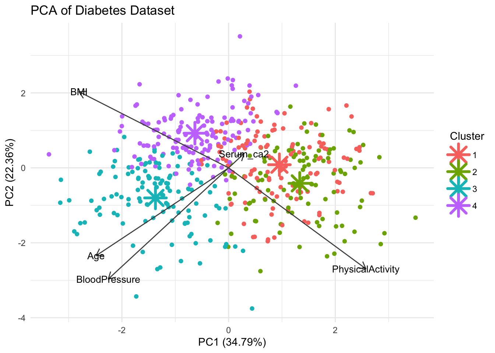
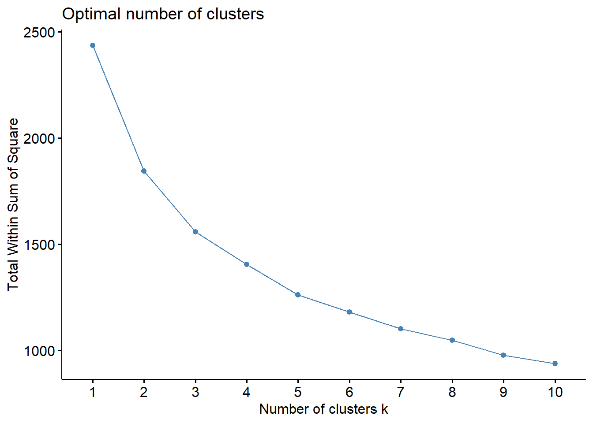
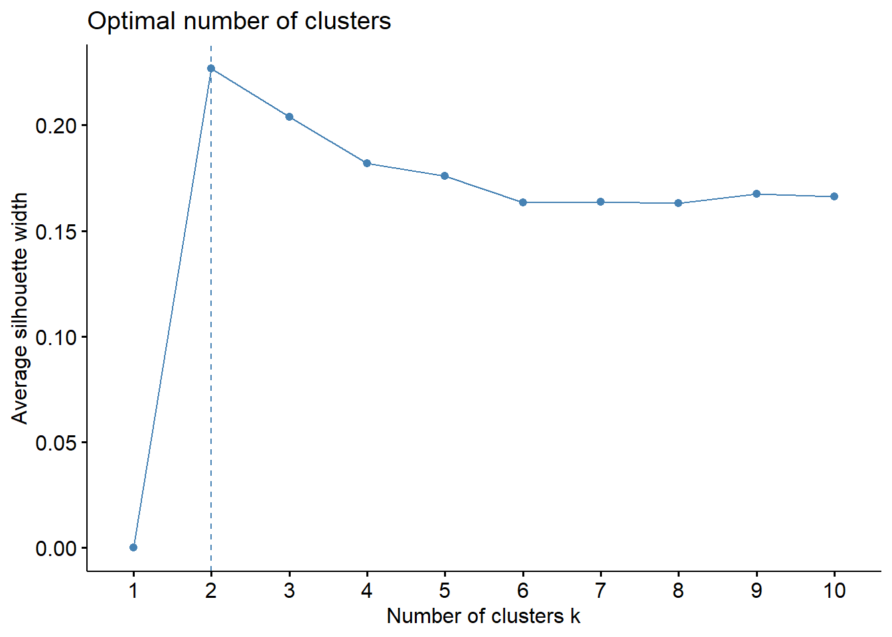
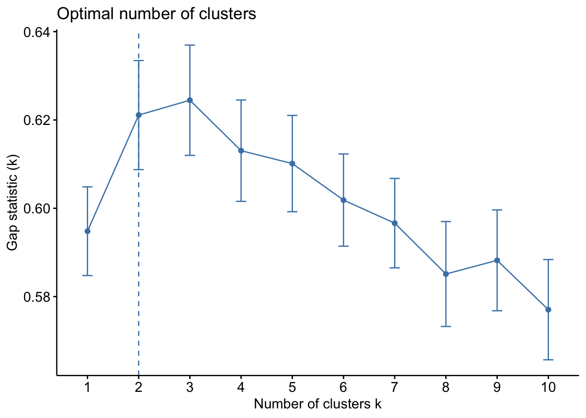
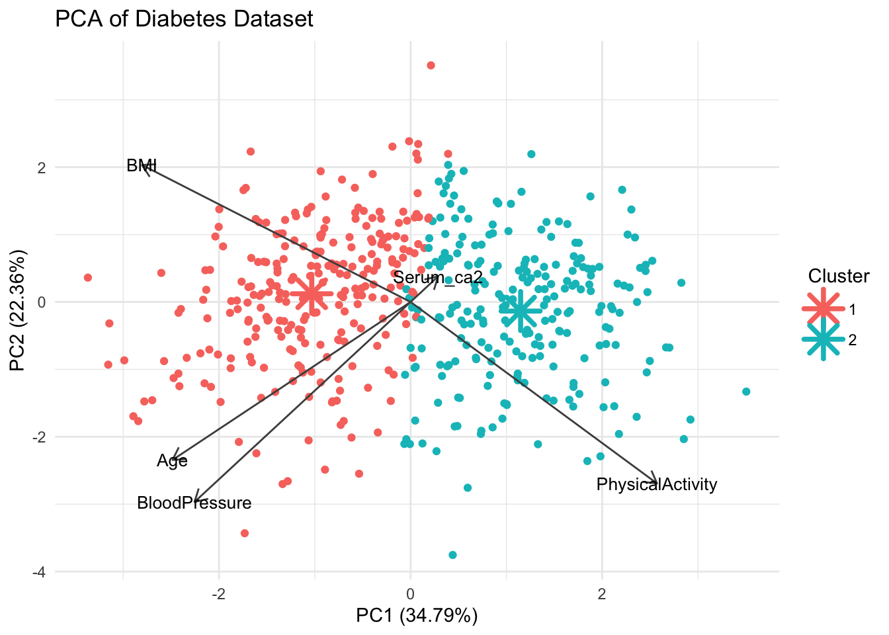

library(tidyverse)
library(ModelMetrics)
library(readxl)
library(caTools)
library(car)
library(ggfortify)Exercise 5 - Solutions
- Load packages
Part 1: Linear regression
- Load the data
boston.csv
df <- as_tibble(read.delim('../data/boston.csv', sep = ','))
head(df)# A tibble: 6 × 6
crim indus nox rm medv neighborhood
<dbl> <dbl> <dbl> <dbl> <dbl> <chr>
1 0.00632 2.31 0.538 6.58 24 Suburban
2 0.0273 7.07 0.469 6.42 21.6 Urban
3 0.0273 7.07 0.469 7.18 34.7 Rural
4 0.0324 2.18 0.458 7.00 33.4 Urban
5 0.0690 2.18 0.458 7.15 36.2 Suburban
6 0.0298 2.18 0.458 6.43 28.7 Suburban Neighborhoodis a categorical variable. We could make it a factor but it will also work as a character column (in the case of usinglm).Split the dataset into test and training data.
# Set seed to ensure reproducibility
set.seed(123)
#add an ID column to keep track of observations
df$ID <- 1:nrow(df)
train <- df %>% sample_frac(.75)
test <- anti_join(df, train, by = 'ID') - Fit the model
model <- lm(medv ~ rm + crim + neighborhood, data = train)summary(model)
Call:
lm(formula = medv ~ rm + crim + neighborhood, data = train)
Residuals:
Min 1Q Median 3Q Max
-19.920 -3.167 -0.468 2.746 35.052
Coefficients:
Estimate Std. Error t value Pr(>|t|)
(Intercept) -25.52560 3.08810 -8.266 2.43e-15 ***
rm 7.63165 0.49122 15.536 < 2e-16 ***
crim -0.22845 0.03525 -6.482 2.86e-10 ***
neighborhoodSuburban 0.07995 0.75050 0.107 0.915
neighborhoodUrban 3.66323 0.84058 4.358 1.70e-05 ***
---
Signif. codes: 0 '***' 0.001 '**' 0.01 '*' 0.05 '.' 0.1 ' ' 1
Residual standard error: 6.183 on 375 degrees of freedom
Multiple R-squared: 0.5573, Adjusted R-squared: 0.5525
F-statistic: 118 on 4 and 375 DF, p-value: < 2.2e-16rmandcrimhave a significant influence on the house price. An increase in the number of rooms increases the price since the coefficient is positive, whereas an increase in crime rate reduces the price. There is a significant difference in price between Rural and Urban zones, but not between Rural and Suburban. Rural is the reference level. Lastly, houses with 0 rooms cost -25k dollar. Perhaps the predictors should be centered before fitting the model around 0 sorm== 0 is the average number of rooms for better interpretability.Scale the numeric predictor columns and redo the modelling. What has changed?
Hint
There is a scale function, see ?scale().
df <- df %>%
mutate(across(where(is.numeric), scale, .names = "standardized_{.col}"))
head(df)# A tibble: 6 × 13
crim indus nox rm medv neighborhood ID standardized_crim[,1]
<dbl> <dbl> <dbl> <dbl> <dbl> <chr> <int> <dbl>
1 0.00632 2.31 0.538 6.58 24 Suburban 1 -0.419
2 0.0273 7.07 0.469 6.42 21.6 Urban 2 -0.417
3 0.0273 7.07 0.469 7.18 34.7 Rural 3 -0.417
4 0.0324 2.18 0.458 7.00 33.4 Urban 4 -0.416
5 0.0690 2.18 0.458 7.15 36.2 Suburban 5 -0.412
6 0.0298 2.18 0.458 6.43 28.7 Suburban 6 -0.417
# ℹ 5 more variables: standardized_indus <dbl[,1]>, standardized_nox <dbl[,1]>,
# standardized_rm <dbl[,1]>, standardized_medv <dbl[,1]>,
# standardized_ID <dbl[,1]># Set seed to ensure reproducibility
set.seed(123)
train <- df %>% sample_frac(.75)
test <- anti_join(df, train, by = 'ID') model_std <- lm(medv ~ standardized_rm + standardized_crim + neighborhood, data = train)
summary(model_std)
Call:
lm(formula = medv ~ standardized_rm + standardized_crim + neighborhood,
data = train)
Residuals:
Min 1Q Median 3Q Max
-19.920 -3.167 -0.468 2.746 35.052
Coefficients:
Estimate Std. Error t value Pr(>|t|)
(Intercept) 21.61103 0.52360 41.274 < 2e-16 ***
standardized_rm 5.36213 0.34514 15.536 < 2e-16 ***
standardized_crim -1.96504 0.30317 -6.482 2.86e-10 ***
neighborhoodSuburban 0.07995 0.75050 0.107 0.915
neighborhoodUrban 3.66323 0.84058 4.358 1.70e-05 ***
---
Signif. codes: 0 '***' 0.001 '**' 0.01 '*' 0.05 '.' 0.1 ' ' 1
Residual standard error: 6.183 on 375 degrees of freedom
Multiple R-squared: 0.5573, Adjusted R-squared: 0.5525
F-statistic: 118 on 4 and 375 DF, p-value: < 2.2e-16All significance observations stay the same since scaling can never affect that. The size of the coefficients will usually change since the range of the predictor (that they are multiplied with in the formula) has changed, but their direction stays the same. Now a house with the average number of rooms (rm == 0) costs 21k.
Part 2: Logistic regression
For this part we will use the joined diabetes data since it has a categorical outcome (Diabetes yes or no). We will not use the oral Glucose measurements as predictors since this is literally how you define diabetes, so we’re loading the joined dataset we created in exercise 1, e.g. ‘diabetes_join.xlsx’ or what you have named it.
diabetes_df <- read_excel('../out/diabetes_join.xlsx')
head(diabetes_df)# A tibble: 6 × 11
ID Sex Age BloodPressure BMI PhysicalActivity Smoker Diabetes
<chr> <chr> <dbl> <dbl> <dbl> <dbl> <chr> <chr>
1 9046 Male 34 84 24.7 93 Unknown 0
2 51676 Male 25 74 22.5 102 Unknown 0
3 60182 Male 50 80 34.5 98 Unknown 1
4 1665 Female 27 60 26.3 82 Never 0
5 56669 Male 35 84 35 58 Smoker 1
6 53882 Female 31 78 43.3 59 Smoker 1
# ℹ 3 more variables: Serum_ca2 <dbl>, Married <chr>, Work <chr>We choose to make a regression model of Diabetes as predicted by serum calcium levels (Serum_ca2), BMI and smoking habits (Smoker).
- We cannot have NA values in our predictors so remove all rows with NAs and save the result into a new dataframe
diabetes_nona.
diabetes_nona <- drop_na(diabetes_df)
nrow(diabetes_nona)[1] 488nrow(diabetes_df)[1] 490- Make the outcome variable into a factor if it is not already.
class(diabetes_nona$Diabetes)[1] "character"diabetes_nona$Diabetes <- factor(diabetes_nona$Diabetes)
class(diabetes_nona$Diabetes)[1] "factor"- Scale all numeric predictors. Check your result.
diabetes_nona <- diabetes_nona %>%
#scale all numeric cols
mutate(across(where(is.numeric), scale))
head(diabetes_nona)# A tibble: 6 × 11
ID Sex Age[,1] BloodPressure[,1] BMI[,1] PhysicalActivity[,1] Smoker
<chr> <chr> <dbl> <dbl> <dbl> <dbl> <chr>
1 9046 Male 0.0166 0.881 -0.820 0.351 Unknown
2 51676 Male -0.775 0.104 -1.15 0.708 Unknown
3 60182 Male 1.42 0.570 0.646 0.550 Unknown
4 1665 Female -0.599 -0.985 -0.581 -0.0855 Never
5 56669 Male 0.105 0.881 0.720 -1.04 Smoker
6 53882 Female -0.247 0.415 1.96 -0.998 Smoker
# ℹ 4 more variables: Diabetes <fct>, Serum_ca2 <dbl[,1]>, Married <chr>,
# Work <chr>- Split your data into training and test data. Take care that the two classes of the outcome variable are in the same ratio in both training and test data.
# Set seed to ensure reproducibility
set.seed(123)
split <- sample.split(diabetes_nona$Diabetes, SplitRatio = 0.75)
train <- diabetes_nona[split,]
test <- diabetes_nona[!split,] #! negates the vector, so true becomes false and vice verse
count(train,Diabetes)# A tibble: 2 × 2
Diabetes n
<fct> <int>
1 0 182
2 1 184count(test, Diabetes)# A tibble: 2 × 2
Diabetes n
<fct> <int>
1 0 61
2 1 61- Fit a regression model with
Serum_ca2,BMIandSmokeras predictors. Check the model summary.
mod1 <- glm(Diabetes ~ Serum_ca2 + BMI + Smoker, data = train, family = binomial)
summary(mod1)
Call:
glm(formula = Diabetes ~ Serum_ca2 + BMI + Smoker, family = binomial,
data = train)
Coefficients:
Estimate Std. Error z value Pr(>|z|)
(Intercept) -0.1099 0.4541 -0.242 0.8088
Serum_ca2 -0.1028 0.2100 -0.490 0.6244
BMI 5.2882 0.6628 7.979 1.48e-15 ***
SmokerNever -1.3338 0.6335 -2.105 0.0353 *
SmokerSmoker 1.2924 0.6277 2.059 0.0395 *
SmokerUnknown -0.1880 0.6831 -0.275 0.7832
---
Signif. codes: 0 '***' 0.001 '**' 0.01 '*' 0.05 '.' 0.1 ' ' 1
(Dispersion parameter for binomial family taken to be 1)
Null deviance: 507.37 on 365 degrees of freedom
Residual deviance: 132.68 on 360 degrees of freedom
AIC: 144.68
Number of Fisher Scoring iterations: 7- Create a second model with only
BMIandSmokeras predictors. Compare the fit of your second model to the first one (includingSerum_ca2). Is there a significant gain, i.e. better fit when including the serum calcium levels as predictor? Which model do you think is better?
mod2 <- glm(Diabetes ~ BMI + Smoker, data = train, family = binomial)
summary(mod2)
Call:
glm(formula = Diabetes ~ BMI + Smoker, family = binomial, data = train)
Coefficients:
Estimate Std. Error z value Pr(>|z|)
(Intercept) -0.1177 0.4532 -0.260 0.7951
BMI 5.2616 0.6557 8.025 1.02e-15 ***
SmokerNever -1.3237 0.6309 -2.098 0.0359 *
SmokerSmoker 1.3356 0.6233 2.143 0.0321 *
SmokerUnknown -0.1545 0.6781 -0.228 0.8197
---
Signif. codes: 0 '***' 0.001 '**' 0.01 '*' 0.05 '.' 0.1 ' ' 1
(Dispersion parameter for binomial family taken to be 1)
Null deviance: 507.37 on 365 degrees of freedom
Residual deviance: 132.92 on 361 degrees of freedom
AIC: 142.92
Number of Fisher Scoring iterations: 7anova(mod1, mod2, test = "Chisq")Analysis of Deviance Table
Model 1: Diabetes ~ Serum_ca2 + BMI + Smoker
Model 2: Diabetes ~ BMI + Smoker
Resid. Df Resid. Dev Df Deviance Pr(>Chi)
1 360 132.68
2 361 132.92 -1 -0.23882 0.6251The likelihood ratio test between the two models has an insignificant p-value. This means there is no evidence that including Serum_ca2 improves the fit of the model. The second model mod2 is therefore preferable.
Part 3: Clustering
In this part we will run clustering on the joined diabetes dataset from exercise 1. Load it here if you don’t have it already from Part 2.
#in case
diabetes_df <- read_excel('../out/diabetes_join.xlsx')
head(diabetes_df)# A tibble: 6 × 11
ID Sex Age BloodPressure BMI PhysicalActivity Smoker Diabetes
<chr> <chr> <dbl> <dbl> <dbl> <dbl> <chr> <chr>
1 9046 Male 34 84 24.7 93 Unknown 0
2 51676 Male 25 74 22.5 102 Unknown 0
3 60182 Male 50 80 34.5 98 Unknown 1
4 1665 Female 27 60 26.3 82 Never 0
5 56669 Male 35 84 35 58 Smoker 1
6 53882 Female 31 78 43.3 59 Smoker 1
# ℹ 3 more variables: Serum_ca2 <dbl>, Married <chr>, Work <chr>- Run the k-means clustering algorithm with 4 centers on the data. Consider which columns you can use and if you have to manipulate them before. If you get an error, check whether you have values that might not be admissible, such as NA.
# Set seed to ensure reproducibility
set.seed(123)
#run kmeans
kmeans_res <- diabetes_df %>%
select(where(is.numeric)) %>%
#drop missing values
drop_na() %>%
#scale all numeric cols
mutate(across(where(is.numeric), scale)) %>%
kmeans(centers = 4, nstart = 25)
kmeans_resK-means clustering with 4 clusters of sizes 121, 105, 121, 141
Cluster means:
Age BloodPressure BMI PhysicalActivity Serum_ca2
1 -0.5286070 -0.3058681 -0.6167955 0.3163233 1.009157782
2 -0.5664483 -0.3764116 -0.8001807 0.9728678 -0.787111758
3 1.3679241 0.8087592 0.3267171 -0.3222905 -0.009092463
4 -0.2984418 -0.1512525 0.8448118 -0.7193553 -0.272065028
Clustering vector:
[1] 1 1 3 2 4 4 3 3 3 3 2 1 1 1 1 4 1 3 2 3 2 3 1 4 4 4 2 4 1 2 1 2 1 3 1 1 3
[38] 1 4 2 4 4 1 1 4 1 4 4 2 4 1 4 1 2 2 3 4 2 3 1 4 3 4 2 4 1 2 1 1 1 1 2 2 3
[75] 2 1 2 4 4 1 1 4 1 1 2 1 1 3 4 2 2 3 2 2 4 4 3 1 4 4 1 4 1 2 1 4 3 3 1 4 3
[112] 4 3 2 2 2 2 2 1 3 3 2 2 4 3 2 4 1 3 3 1 2 1 3 4 1 2 3 2 1 3 3 2 1 2 3 1 2
[149] 4 3 1 2 4 4 3 4 4 4 4 1 3 4 4 4 1 1 3 2 1 2 1 1 4 1 4 2 2 1 3 2 4 4 3 2 2
[186] 3 1 4 3 1 1 2 1 3 2 3 3 4 1 2 3 2 3 4 4 3 1 3 3 4 4 4 3 2 2 1 1 4 3 3 4 3
[223] 2 4 2 3 4 2 3 4 3 1 4 3 3 2 4 3 2 1 3 3 3 2 2 4 1 1 2 4 3 3 4 4 2 4 4 1 4
[260] 1 2 1 4 4 4 1 2 3 3 1 4 1 3 1 1 4 2 4 3 3 4 3 3 4 1 3 4 3 4 3 1 4 4 3 2 3
[297] 3 2 3 4 4 2 1 4 4 2 3 1 4 1 2 2 1 2 2 3 4 1 4 3 1 4 4 3 4 4 3 4 1 4 2 2 2
[334] 1 3 2 1 3 1 3 4 4 4 1 1 1 2 4 4 4 2 2 4 4 4 1 3 4 3 4 1 3 1 3 1 1 4 2 2 3
[371] 4 1 2 4 4 2 4 2 4 3 3 4 3 1 2 3 4 4 1 2 4 1 2 2 3 1 1 2 2 2 3 4 3 1 3 4 4
[408] 3 2 3 4 4 1 1 4 4 3 3 4 3 2 4 4 4 1 4 2 1 3 4 1 4 2 3 4 1 1 4 1 1 2 3 2 3
[445] 4 1 3 3 3 2 2 3 3 2 4 4 1 3 3 3 4 1 3 1 3 1 1 3 1 2 1 4 1 1 3 4 4 2 2 4 2
[482] 2 3 3 4 1 4 3
Within cluster sum of squares by cluster:
[1] 317.4167 315.8628 396.1259 367.9939
(between_SS / total_SS = 42.6 %)
Available components:
[1] "cluster" "centers" "totss" "withinss" "tot.withinss"
[6] "betweenss" "size" "iter" "ifault" - Check whether the data you have run k-means on has the same number of rows as the dataframe with meta information, e.g. whether the person had diabetes. If they are not aligned, create a dataframe with Diabetes info that matches the dataframe you ran clustering on.
Hint
drop_na() takes an argument that tells which columns to look at for NA values.
The full data:
nrow(diabetes_df)[1] 490How many rows did we run clustering on?
diabetes_df %>%
select(where(is.numeric)) %>%
#drop missing values
drop_na() %>%
#scale all numeric cols
mutate(across(where(is.numeric), scale)) %>%
nrow()[1] 488We could also have checked the length of kmeans_res$cluster:
length(kmeans_res$cluster)[1] 488So we have omitted some rows. We need to omit the same rows from the original dataframe so our k-means clustering results are aligned with it.
diabetes_df <- diabetes_df %>%
drop_na(where(is.numeric))
nrow(diabetes_df)[1] 488- Visualize the results of your clustering.
We first need to calculate a PCA. This is basically the same we have done in exercise 3B.
pca_res <- diabetes_df %>%
select(where(is.numeric)) %>%
#drop missing values
drop_na() %>%
#scale all numeric cols
mutate(across(where(is.numeric), scale)) %>%
prcomp()Now we project the k-means centroids in the PCA space
#project cluster centers from kmeans into the pca space
centers_pca <- predict(pca_res, newdata = kmeans_res$centers) %>% as.data.frame()
# Label clusters
centers_pca$cluster <- as.factor(1:nrow(centers_pca))
centers_pca PC1 PC2 PC3 PC4 PC5 cluster
1 0.9517476 0.08349116 0.9526042 -0.09077825 0.20829660 1
2 1.3335463 -0.41329140 -0.8435674 -0.05601768 -0.07039558 2
3 -1.3718134 -0.80239970 0.1598088 0.41230331 -0.12147179 3
4 -0.6325844 0.92470588 -0.3264354 -0.23420338 -0.02208699 4And add cluster assignments to the diabetes_df:
diabetes_df$Cluster <- factor(kmeans_res$cluster)Finally we can plot:
autoplot(pca_res, data = diabetes_df, color = 'Cluster',
loadings = TRUE, loadings.colour = "grey30",
loadings.label.colour = "black",
loadings.label = TRUE, loadings.label.size = 3.5,
scale = 0) +
theme_minimal() +
labs(title = "PCA of Diabetes Dataset") +
# Cluster centers
geom_point(data = centers_pca, aes(x = PC1, y = PC2, color = cluster),
shape = 8, size = 6, stroke = 2) 
Well the separation was not that good in exercise 3B so perhaps we should not expect very clean clusters.
- Investigate the best number of clusters.
library(factoextra)Welcome! Want to learn more? See two factoextra-related books at https://goo.gl/ve3WBadiabetes_df %>%
select(where(is.numeric)) %>%
#drop missing values
drop_na() %>%
#scale all numeric cols
mutate(across(where(is.numeric), scale)) %>%
fviz_nbclust(kmeans, method = "wss")
diabetes_df %>%
select(where(is.numeric)) %>%
#drop missing values
drop_na() %>%
#scale all numeric cols
mutate(across(where(is.numeric), scale)) %>%
fviz_nbclust(kmeans, method = "silhouette")
diabetes_df %>%
select(where(is.numeric)) %>%
#drop missing values
drop_na() %>%
#scale all numeric cols
mutate(across(where(is.numeric), scale)) %>%
fviz_nbclust(kmeans, method = "gap_stat")
The elbow is not very clear but the silhouette and gap statistic favor 2 clusters - which kind of makes sense since we have two outcomes, diabetic and non-diabetic.
- Re-do the clustering (plus visualization) with that number.
# Set seed to ensure reproducibility
set.seed(123)
#run kmeans
kmeans_res <- diabetes_df %>%
select(where(is.numeric)) %>%
#drop missing values
drop_na() %>%
#scale all numeric cols
mutate(across(where(is.numeric), scale)) %>%
kmeans(centers = 2, nstart = 25)
kmeans_resK-means clustering with 2 clusters of sizes 257, 231
Cluster means:
Age BloodPressure BMI PhysicalActivity Serum_ca2
1 0.4697155 0.3538870 0.6621866 -0.5424263 -0.1002325
2 -0.5225839 -0.3937184 -0.7367184 0.6034786 0.1115140
Clustering vector:
[1] 2 2 1 2 1 1 1 1 1 1 2 2 2 2 2 1 2 1 2 1 2 1 1 1 1 1 2 1 2 2 2 2 2 1 2 2 1
[38] 1 2 2 1 1 1 1 1 2 2 1 2 1 2 1 2 2 2 1 1 2 1 2 1 1 1 2 1 2 2 2 2 2 2 2 2 1
[75] 2 2 2 1 1 2 2 2 2 2 2 1 2 1 1 2 2 1 2 2 1 1 1 2 1 1 2 1 2 2 2 1 1 1 2 1 1
[112] 2 1 2 2 2 2 2 2 2 1 2 2 1 1 2 1 2 1 1 2 2 2 1 1 2 2 1 2 2 1 1 2 2 2 1 2 1
[149] 1 1 2 2 2 1 1 1 1 1 1 2 1 2 2 1 1 2 1 2 2 2 1 2 1 2 1 2 2 2 1 2 1 1 1 2 2
[186] 2 2 1 1 2 1 2 2 1 2 1 1 1 2 2 1 2 1 1 1 1 2 1 1 1 1 1 1 2 2 2 2 1 1 1 1 1
[223] 2 1 2 1 1 2 1 1 1 2 1 1 1 2 2 1 2 2 1 1 1 1 2 1 2 2 2 1 1 1 2 1 2 1 1 2 1
[260] 2 2 2 1 1 1 2 2 1 1 2 1 2 1 2 2 1 2 1 1 1 1 1 1 1 2 1 1 1 1 1 2 1 1 1 2 1
[297] 1 2 1 1 1 2 2 1 1 2 1 2 1 2 2 1 2 2 2 1 1 2 1 1 2 1 1 1 1 2 1 1 2 1 2 2 2
[334] 2 1 2 2 1 2 1 1 1 1 2 2 2 2 1 1 1 2 2 1 1 1 2 1 1 1 1 2 1 2 1 2 2 1 2 2 1
[371] 1 2 2 1 1 2 1 1 1 1 1 1 1 2 1 1 1 1 2 2 2 2 2 2 1 2 2 2 2 2 1 1 1 2 1 1 2
[408] 1 2 1 1 1 2 2 2 1 1 1 1 2 2 2 1 1 2 1 2 2 1 1 2 1 2 2 1 1 1 2 2 2 2 1 2 1
[445] 1 2 1 1 1 2 2 1 1 2 1 1 1 2 2 1 1 2 1 2 1 2 2 1 2 2 2 1 2 2 1 1 1 2 2 1 2
[482] 2 1 1 1 2 1 1
Within cluster sum of squares by cluster:
[1] 959.9630 883.9897
(between_SS / total_SS = 24.3 %)
Available components:
[1] "cluster" "centers" "totss" "withinss" "tot.withinss"
[6] "betweenss" "size" "iter" "ifault" #project cluster centers from kmeans into the pca space
centers_pca <- predict(pca_res, newdata = kmeans_res$centers) %>% as.data.frame()
# Label clusters
centers_pca$cluster <- as.factor(1:nrow(centers_pca))
centers_pca PC1 PC2 PC3 PC4 PC5 cluster
1 -1.032372 0.1214937 -0.05219972 0.003763692 -0.07308096 1
2 1.148570 -0.1351683 0.05807502 -0.004187311 0.08130652 2diabetes_df$Cluster <- factor(kmeans_res$cluster)autoplot(pca_res, data = diabetes_df, color = 'Cluster',
loadings = TRUE, loadings.colour = "grey30",
loadings.label.colour = "black",
loadings.label = TRUE, loadings.label.size = 3.5,
scale = 0) +
theme_minimal() +
labs(title = "PCA of Diabetes Dataset") +
# Cluster centers
geom_point(data = centers_pca, aes(x = PC1, y = PC2, color = cluster),
shape = 8, size = 6, stroke = 2) 
Extra exercises
e1. Find the best single predictor in the Diabetes dataset. This is done by comparing the null model (no predictors) to all possible models with one predictor, i.e. outcome ~ predictor, outcome ~ predictor2, ect. The null model can be formulated like so: outcome ~ 1 (only the intercept). Fit all possible one predictor models and compare their fit to the null model with a likelihood ratio test. Find the predictor with the lowest p-value in the likelihood ratio test. This can be done in a loop in order to avoid writing out all models.
Hint
To use a formula with a variable you will need to combine the literal part and the variable with paste, e.g. paste("Outcome ~", my_pred).
# Define the null model (intercept-only model)
null_model <- glm(Diabetes ~ 1, data = train, family = binomial)
# Get predictor names (excluding the outcome variable)
predictors <- setdiff(names(diabetes_nona), c("Diabetes", "ID"))
# Initialize an empty data frame to store results
results <- data.frame(Predictor = character(), ChiSq = numeric(), P_Value = numeric(), stringsAsFactors = FALSE)
# Loop through each predictor and fit a logistic regression model
for (pred in predictors) {
# Fit model with single predictor
model_pred <- glm(paste("Diabetes ~", pred), data = train, family = binomial)
# Perform Likelihood Ratio Test
test_result <- anova(null_model, model_pred, test = "Chisq")
# Extract Chi-square statistic and p-value
chi_sq <- test_result$Deviance[2] # The second row corresponds to the predictor model
p_value <- test_result$`Pr(>Chi)`[2]
# Store results
results <- rbind(results, data.frame(Predictor = pred, ChiSq = chi_sq, P_Value = p_value))
}
# Print the results sorted by p-value
results <- results %>% arrange(P_Value)
print(results) Predictor ChiSq P_Value
1 BMI 353.0033684 9.399861e-79
2 PhysicalActivity 174.3147338 8.449925e-40
3 Smoker 69.2823192 6.080298e-15
4 Age 30.2674741 3.763850e-08
5 BloodPressure 13.6648488 2.185065e-04
6 Work 6.6505603 8.391019e-02
7 Married 2.6869823 1.011713e-01
8 Sex 1.8470863 1.741227e-01
9 Serum_ca2 0.7986775 3.714891e-01e2. Write a function that handles visualization of k-means clustering results. Think about which information you need to pass and what it should return.